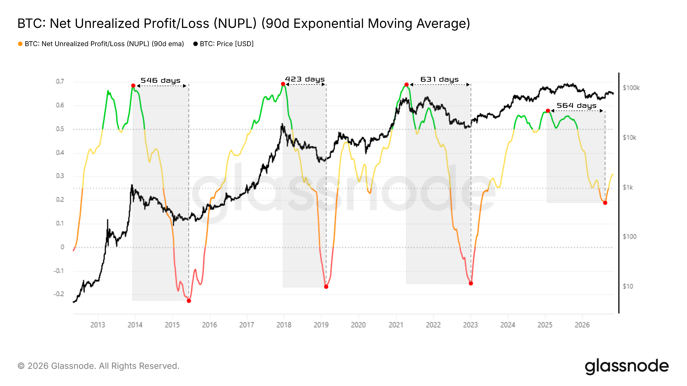
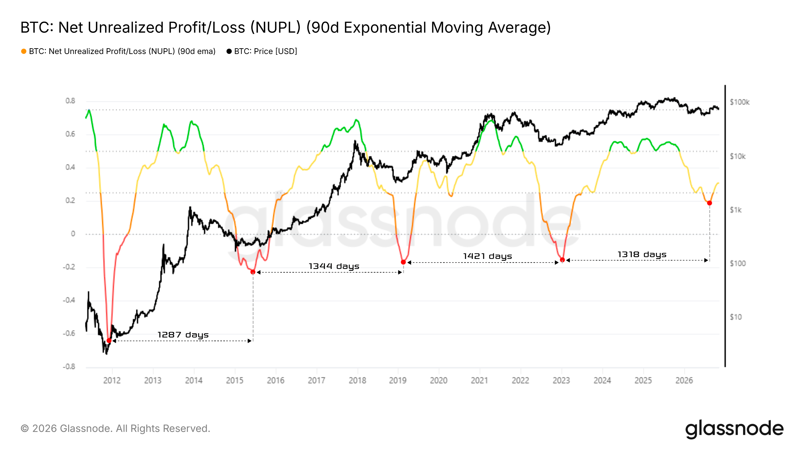
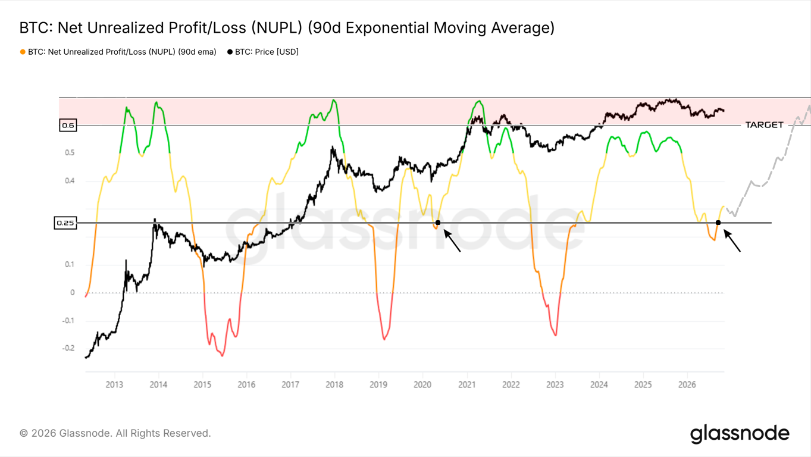
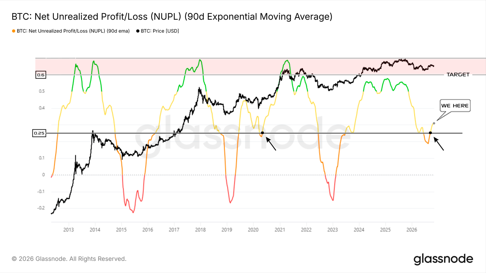

On-Chain · NUPL [90]
Снижение на NUPL завершено: Low сформирован 18 августа 2026
Нереализованная прибыль / убыток · данные на 7 ноября 2026 · источник Glassnode
564 дня
снижение от High до Low · норма 423–631 дней
1318 дней
между Low 2023 и Low 2026 · норма 1287–1421 дней
выше 0,25
закрепление 17 сентября 2026 · стадия «Оптимизма»
Время снижения
Снижение заняло 564 дня — в пределах нормы

546 дней
15 декабря 2013 – 14 июня 2015
423 дня
21 декабря 2017 – 17 февраля 2019
631 день
17 апреля 2021 – 8 января 2023
564 дня · Low 2026
31 января 2025 – 18 августа 2026
Норма: 423–631 дней
Календарное окно: 30 марта – 24 октября 2026
NUPL [90] · Glassnode · данные на 7 ноября 2026
2 / 7
Цикличность Low → Low
Между Low прошло 1318 дней — это норма

1287 дней
5 декабря 2011 – 14 июня 2015
1344 дня
14 июня 2015 – 17 февраля 2019
1421 день
17 февраля 2019 – 8 января 2023
1318 дней · Low 2026
8 января 2023 – 18 августа 2026
Норма: 1287–1421 дней
Календарное окно: 18 июля – 29 ноября 2026
Запас по времени: 23 дня
NUPL [90] · Glassnode · данные на 7 ноября 2026
3 / 7
Подтверждение
17 сентября 2026: закрепление выше 0,25
Страх
от 0 до 0,25
Оптимизм
от 0,25 до 0,5
Мы здесь: около 0,3
Вера
зелёная зона графика с 0,5; цель роста — 0,6
18 августа 2026
Low на метрике, около 0,19
17 сентября 2026
закрепление выше 0,25: переход из «Страха» в «Оптимизм»
Сильный аргумент: рыночная ситуация изменилась в пользу восходящего тренда на bitcoin.
NUPL [90] · Glassnode · данные на 7 ноября 2026
4 / 7
Моделирование
Цель роста на метрике — уровень 0,6

Выше 0,6
Нереализованная прибыль крайне высока — растёт давление продаж
Переход в стадию «Веры» — поздний этап бычьего рынка
Предвестник кульминационной фазы роста
Пунктир на графике — предполагаемое направление движения показателя
NUPL [90] · Glassnode · данные на 7 ноября 2026
5 / 7
Текущая ситуация
Сейчас NUPL около 0,3, выше уровня 0,25

18 августа 2026
Low на метрике, около 0,19
Более 2,5 месяцев роста
с Low показатель только рос
Сейчас около 0,3
выше 0,25: стадия «Оптимизма»
Прямые подтверждения в пользу восходящего тренда на NUPL и на цене bitcoin
NUPL [90] · Glassnode · данные на 7 ноября 2026
6 / 7
Итоги
Снижение на NUPL завершено
01
Low сформирован
Low на NUPL — 18 августа 2026. BTC обычно формирует Low раньше NUPL на 1 месяц и более.
02
Время в пределах нормы
Снижение: 564 дня (норма 423–631). Low → Low: 1318 дней (норма 1287–1421).
03
Рынок изменился
17 сентября 2026 закрепление выше 0,25: переход из «Страха» в «Оптимизм».
04
Ориентир роста — 0,6
Выше 0,6 — «Вера», поздний этап бычьего рынка и предвестник кульминационной фазы роста.
Подтверждения в пользу восходящего тренда есть и на NUPL, и на цене bitcoin.
NUPL [90] · Glassnode · данные на 7 ноября 2026
7 / 7
‹
›